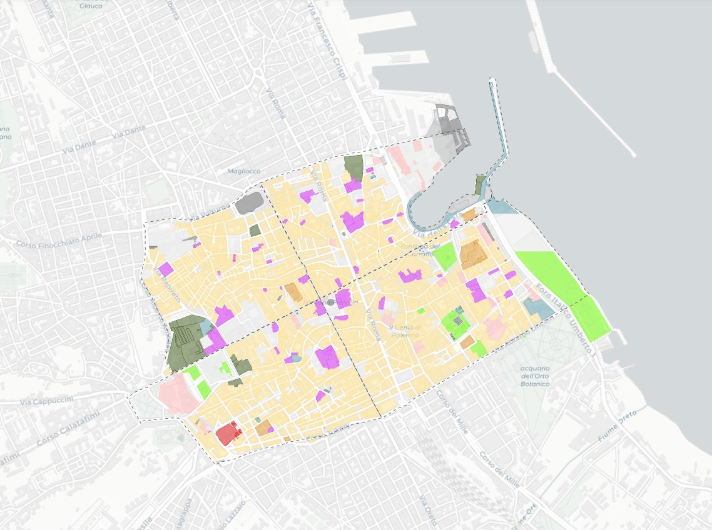

Studio Demografico e Socio-Economico del Centro Storico di Palermo
Analisi geospaziale interattiva basata su dati catastali e statistici
Mappe interattive
Indicatori demografici
Dati territoriali
Open Data

 @opendatasicilia
@opendatasicilia